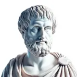
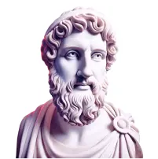
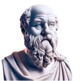

Vi hjælper dig!
Forskningen viser at det er svært at holde motivationen over længere periode - selv med mål man selv har sat for sig. Vi vil derfor hjælpe dig med at nå dine mål:
Notifikationer
Streaks / badges / xp
Reflection Journey
Husk at reflektere i dag — din streak er i fare
Reflection Journeys
Præstationsoversigt
Streak
3 dage
.webp)
Seneste præstation
3/7 dage
Find din karrierevej
.webp)
Hvordan du bruger teknologi fornuftigt
Din fremgang
Find din karrierevej
Teknologi
Tid til at reflektere
Vælger du din vej, eller lader du vejen vælge dig?
Mange mennesker når frem til en karriere ikke gennem et bevidst valg, men gennem en række små givne faktorer: hvad deres forældre forventede, hvad deres karakterer tillod, hvad deres venner lavede.
Spørgsmålet er, om der er forskel på en vej, du trådte ind på, og en vej, du virkelig valgte.
Kan et liv, du er faldet ind i, stadig være et godt liv? Og hvis du fornemmer, at det ikke kan, hvad betyder det så præcist at vælge anderledes nu?
Knappen låses op når tiden er gået
Jean-Paul Sartre svarer
Tid til at reflektere
Er et værktøj nogensinde bare et værktøj?
Vi har en tendens til at tænke på teknologi som neutral, noget der simpelthen gør, hvad vi beder den om.
Men en hammer former, hvordan vi griber et søm an, en søgemaskine former, hvad vi synes er værd at vide, og en social platform former, hvem vi tror, vi er i forhold til andre.
Spørgsmålet er, om nogen teknologi virkelig er ligeglad med den person, der bruger den.
Bærer et værktøj sin designers antagelser i sig? Og hvis ja, hvad betyder det for dig, hver gang du tager et op?
Martin Heidegger svarer
Godt gået!
Dit svar
NUVÆRENDE STREAK
4 dage i træk
Badges
Reflektionsrejser
0/7 dage
0/7 dage
0/7 dage
0/7 dage
0/7 dage
0/7 dage
Tænkere

0/7 samtaler
0/7 samtaler
1/7 samtaler
0/7 samtaler
0/7 samtaler
0/7 samtaler

0/7 samtaler

1/7 samtaler
0/7 samtaler